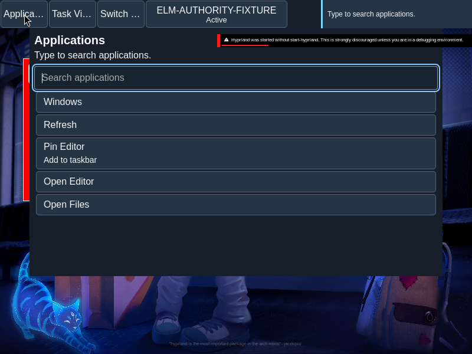
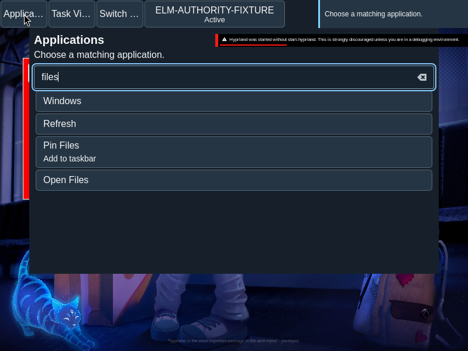
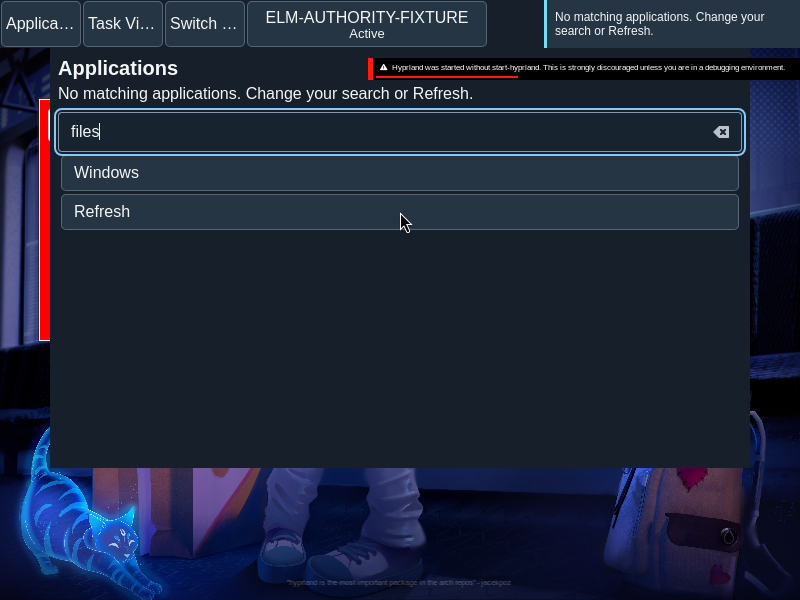
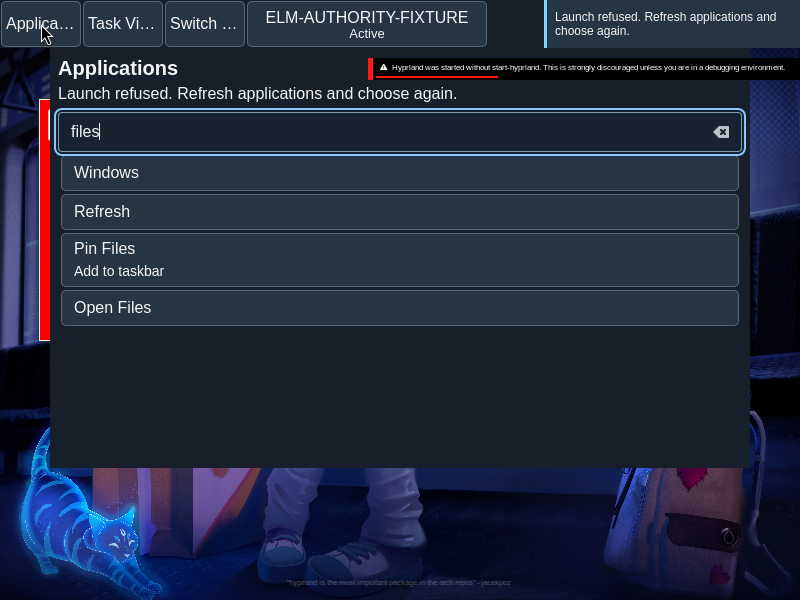

Launcher
Applications presents search, pin management and explicit launch actions in a continuous list.
Overview
Applications presents search, pin management and explicit launch actions in a continuous list.
Anatomy
The search field precedes close, refresh, applicable management actions and result buttons in the renderer’s flat source order.
The surface is a flat sequence of controls, not a grid of application cards. Search and result labels are ordinary text; management controls appear only when applicable.
States
Search results, no matches, pending, submitted, refused and unknown outcomes retain distinct meaning.
- Initial: the available catalog is shown.
- Filtered: matching entries follow the query ranking.
- No matches: the query remains available to edit.
- Refused or unknown: feedback describes the launch outcome without asserting that a window opened.
Specimen
Real Elm interface. Simulated desktop. Client window interiors are fixtures. Load the desktop only when you want to explore this component.
Open the full desktop scenario
Related archived specimens: Frozen v6 applications. Frozen v6 is an archival reference.
Behavior
Search folds case and ranks exact names, prefixes and token prefixes. Composition updates the query; choosing an enabled result launches. Unknown requires acknowledgement before another launch.
Type in Search applications, then move through the controls and activate a result. Text under input-method composition is held until composition ends; a partial composition does not trigger a launch.
Accessibility
Tab follows source order; Enter or Space activates a button. Search preserves input composition and an accessible name.
Content
Use the actual application name and outcome wording. A submitted launch is not an observed window.
Use the catalog’s application name and retain meaningful distinctions in similarly named results. Keep a no-match message distinct from a service or launch failure.
Evidence
Unmodified captures of the running interface record the states below.




Try it
Explore launcher in context on the simulated desktop.